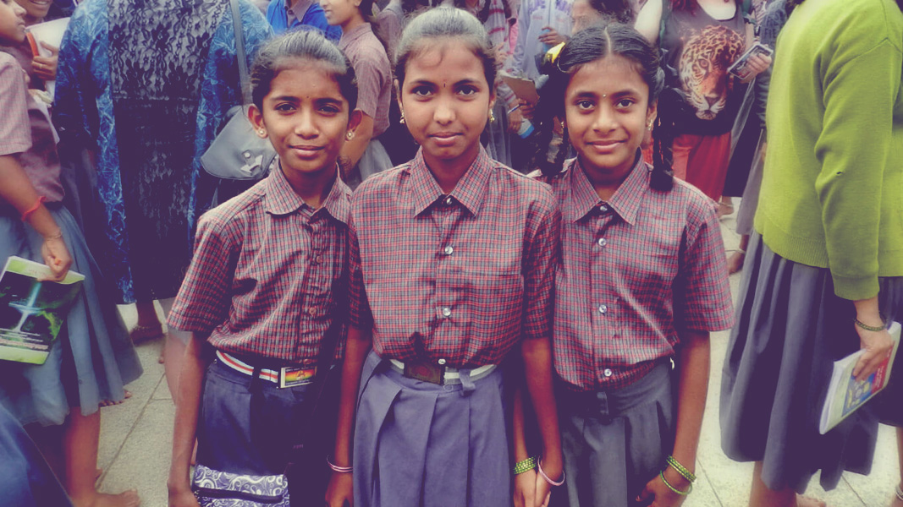
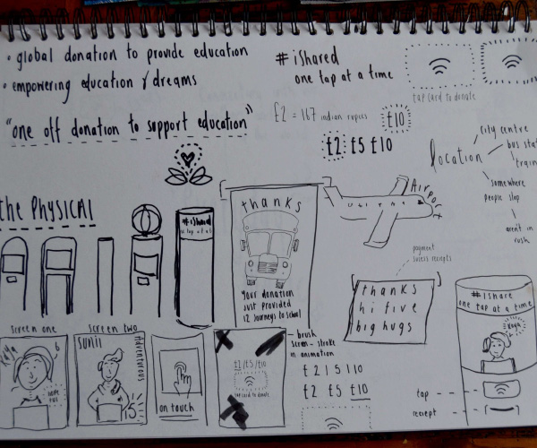
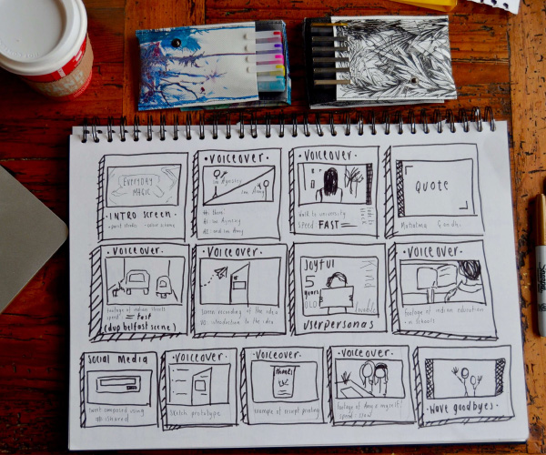
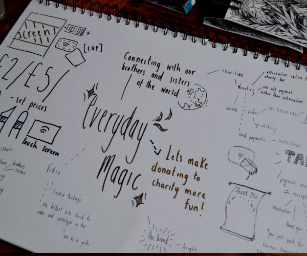

Overview
Everyday Magic was a brief set by the IxDA student design challenge. The aim was to focus on small interactions that you can improve in a massive way. Something that creates a simple, yet powerful moment.
- Team
- Amy Graham and myself.
Our Idea
We can throw loose change into a charity box, but how long will it lie there for? We can sign up with an organisation to donate monthly, but how many of us are prepared to make that commitment? What if there was a simple, everyday magic solution to the problem of giving to charity?

Initial sketches

Initial sketches

Initial Sketches
Final Solution
iShared is a one-tap-at-a-time donation station located in airports all over the globe, allowing you to instantly donate to support education worldwide. All with just one tap!
Thanks to the magic of contactless payments, donations can be made effortlessly without the need to register your details. iShared gives you that, “I did something good!” feeling. Even better, it shows you the impact your gift has made by providing a fun and fact-filled receipt, showing you exactly how your gift has been used.
Let's make donating to charity more fun!